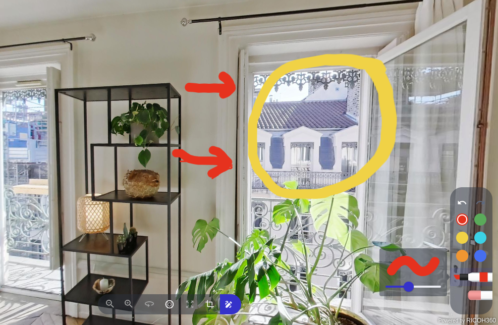
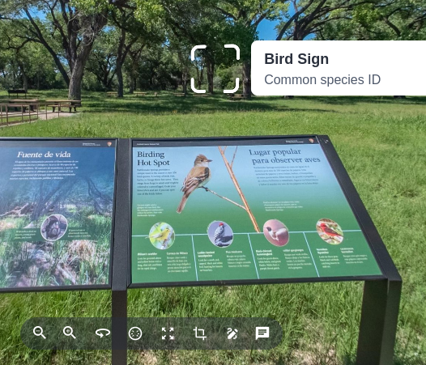
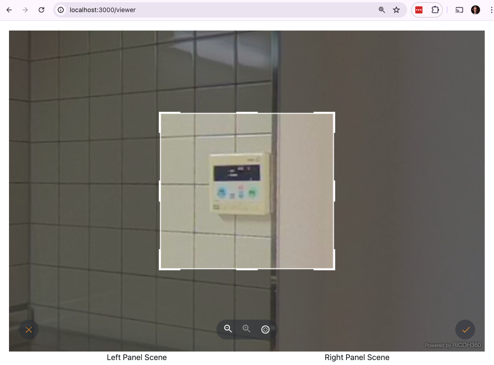

Features
Image Enhancement
This feature can improve image quality, especially resolution, noise, and color aberration.
Perform Low Light Enhancement on images with ISO 400 or higher. If the ISO sensitivity is set below 400, normal enhancement processing is performed. Uses API option sr_lle_auto.
Example 1: Dark interior Carlesbad Caverns National Park
Example 2: Dark interior car garage

Split Screen
The RICOH360 Viewer can show a split screen view. Movement and zoom of the 2 images at the same time can be locked or unlocked.
Navigation
Navigation controls at bottom of screen allow viewer to select Zoom In, Zoom Out, Auto Rotate, Home Position, Enter Full Screen, Enter Cropping, and Enter Drawing.
Drawing
Drawings move with the image when the viewer is moved. There are an eraser, different color pens, and different line thicknesses.
Written notes and simple drawings appear in viewer.

Annotation
You can use the keyboard to input an annotation and place a rounded squarish icon in the scene that tells people that there is more information available.
Selecting the icon will display the information on the picture.

Cropping
Key portions of the 360° image can be cropped and saved locally.
Choose Enter Cropping
Select area

Cancel or Save Locally
Choose Location to Save Locally
A Note on Demo UI
- Below the main image, there are two lists of images. Choose from the left list of images to pick the main viewer image. If you use the split screen, use the right list to choose the second image.
- To compare Low Light Enhancement, choose a dark image on the left. Choose the same dark image on the right. Click the Enhance button on the right image, showing Low Light Enhancement.
- Note: If you want to test the Blur function, be sure to choose an image with people in it.